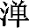

中江河常注。水势劣火，结为高山；是故山石击则成焰，融则成水。土势劣水，抽为草木；是故林薮遇烧成土
(4)
，因绞成水。交妄发生，递相为种，以是因缘，世界相续。
中江河常注。水势劣火，结为高山；是故山石击则成焰，融则成水。土势劣水，抽为草木；是故林薮遇烧成土
(4)
，因绞成水。交妄发生，递相为种，以是因缘，世界相续。本卷接着讨论一切法与如来藏性之关系，并引出了更为精彩的正见抉择。首先由佛的十大弟子中说法第一的富楼那尊者提出了两个问题：一是，如果世间一切法都是如来藏，是本来清净的无为法，为何忽然生出山河大地等一切有为相，而且次第迁流，终而复始？二是，地水火风空“五大”皆周遍法界，然“五大”之性互相陵灭，如水火不容，为何二者都可以周遍？
第一个问题，是令初学者相当迷惑不解的问题，也是令哲学家困惑难解的问题，也是学修悟解必须参究的问题。经中佛陀解释了无明惑业之依真起妄，并详细讲说了世界、众生、业果三种相续生起的原因和过程。古来注家多以《大乘起信论》之“三细”（业相、转相、现相）、“六粗”（智相、相续相、执取相、计名字相、起业相、业系苦相）来解释，所谓“无明不觉生三细，境界为缘长六粗”。此问题，经中其后还要多次反复讲说，这是本经十分重要的义理内容。第二个问题中，佛陀由此开示了如来藏三义：非一切法之空如来藏，即一切法之不空如来藏，“离即离非，是即非即”之空不空如来藏。佛陀通过这两个问题的回答，为说三种相续之因，开示五大圆融之故，显明性相无碍之理，而又会归三如来藏于一心。对此，台家以一心三观性具义解释，贤首家以本具真如心解释，而楞严家则以本具楞严大定发挥。而富楼那又从佛和众生等不同角度对这两个问题继续提问，佛陀以种种比喻回答，并提出了本经关于修证的重要原则——“歇即菩提”。
至此，本经由抉择正见逐步转入修证法门。随后阿难尊者提问，佛陀宣说了发菩提心之初心二决定义：第一义是，因地发心须以不生不灭之真如性为本修因，由此说“五浊”义，所谓一决定以因同果，澄五浊方可入涅槃；第二义是，决定捐弃诸有为相，审知烦恼根本和根尘颠倒之处，所谓二决定从根解结，脱缠缚乃入圆通。生死根本是六识，然六识须依六根而起，故六根为烦恼根本。根尘颠倒之处在六根，故修楞严大定，依不生灭心为本修因，选择下手功夫就是从根起修，从根解结，这是本经所讲的圆修法门。
接着讲说六根功德优劣，选择耳根为圆通根，从耳根解结，一根若返源，六根成解脱。并详细分析六根生起由来，提倡只选择一根，一门深入，“随拔一根，脱黏内伏，伏归元真”，其他五根随之圆满解脱。
又本卷所讲的耳根、舌根、意根一千二百功德，眼根、鼻根、身根八百功德，在《法华经》、《大乘庄严经论》中也有类似讲法。
尔时，富楼那弥多罗尼子在大众中即从座起，偏袒右肩，右膝着地，合掌恭敬，而白佛言：“大威德世尊，善为众生敷演如来第一义谛。世尊常推说法人中，我为第一。今闻如来微妙法音，犹如聋人逾百步外聆于蚊蚋，本所不见，何况得闻？佛虽宣明，令我除惑，今犹未详斯义究竟无疑惑地。世尊，如阿难辈虽则开悟，习漏未除；我等会中登无漏者，虽尽诸漏，今闻如来所说法音，尚纡疑悔。世尊，若复世间一切根、尘、阴、处、界等，皆如来藏清净本然，云何忽生山河大地诸有为相，次第迁流，终而复始？又如来说，地水火风，本性圆融，周遍法界，湛然常住。世尊，若地性遍，云何容水？水性周遍，火则不生。复云何明，水、火二性俱遍虚空，不相陵灭？世尊，地性障碍，空性虚通，云何二俱周遍法界？而我不知是义攸往，唯愿如来宣流大慈，开我迷云及诸大众。”作是语已，五体投地，钦渴如来无上慈诲。
译文：
这时，富楼那尊者即在大众中从座位上起来，偏袒右肩，右膝着地，合掌恭敬礼佛而对佛说：“大威德世尊，您最善于为众生详细解说如来的第一义谛。世尊常推重我为说法人中的第一。但我现在听了您的微妙讲解法音，却犹如聋人在百步外听蚊虫的叫声，本来就不能见到，更何况能听得到呢？佛虽然宣明法义，令我等除去疑惑，但我现在仍未明白第一义谛的究竟道理，未达到无疑惑的境地。世尊，如阿难等辈虽然开悟，习气烦恼尚未除尽；就是大会中像我一样证得无漏果位的阿罗汉众，虽然有漏烦恼已尽，现在听了如来所说法音，还纡绕在疑悔之中。世尊，如果世间一切根、尘、阴、处、界等，都是如来藏妙真如性、清净本然，为何忽然生出山河大地等种种有为相？而且它们次第迁流，终而复始？又如佛所常说，地水火风四大的本性是圆融无碍，周遍法界，湛然常住。世尊，如果地性周遍法界，怎么可以容水呢？水性周遍法界，火则不能产生。又如何明了水、火二性都遍满虚空，怎么不相互陵夺、消灭呢？世尊，地性具障碍相，空性具虚通相，为何又说二性都遍满法界呢？然而我实不知此义理的归属所在，唯愿佛以大慈悲教诲我及会中诸大众，拨开我们心中的迷云。”富楼那说完这些话后，五体投地，礼敬佛陀，渴望佛赐予无上慈悲的教诲。
尔时，世尊告富楼那及诸会中漏尽无学诸阿罗汉：“如来今日普为此会宣胜义中真胜义性，令汝会中定性声闻 (1) ，及诸一切未得二空、回向上乘阿罗汉等 (2) ，皆获一乘寂灭场地、真阿练若、正修行处 (3) 。汝今谛听，当为汝说。”富楼那等钦佛法音，默然承听。
注释：
(1) 定性声闻：指沉空滞静、不肯回小向而趋止涅槃化城的钝根声闻乘人。
(2) 二空：人空、法空。人空，又称“我空”、“生空”，即人我空无之真理。凡夫之人妄计色、受、想、行、识等五蕴是我，强立主宰，引生烦恼，造种种业。佛为破除此一妄执，故说五蕴无我之理，谓我仅为五蕴之假和合，并无常一之主宰。声闻、缘觉等二乘之人闻之而证入无我之理，称为“人空”。法空，即诸法空无之真理。二乘之人未达法空之理时犹计五蕴之法为实有者，佛为破除此一妄执，故说般若深慧，令彼等彻见五蕴自性皆空。菩萨闻之而入诸法皆空之理，称为“法空”。
(3) 一乘：即指佛乘。
译文：
这时，佛告诉富楼那以及会中已断除烦恼的无学阿罗汉说：“如来今天普为此会大众宣说胜义法中的真胜义性，让你们会中的定性声闻，以及一切还未证得人、法二空却回心向上乘的阿罗汉们，都能获得一乘寂灭道场、真正的阿练若寂静处、正修行处。你们现在仔细听着，我将为你们宣说。”富楼那等钦仰佛陀的法音，都肃然恭敬地聆听。
佛言：“富楼那，如汝所言，清净本然，云何忽生山河大地？汝常不闻如来宣说‘性觉妙明，本觉明妙’？”富楼那言：“唯然，世尊。我常闻佛宣说斯义。”佛言：“汝称觉明，为复性明，称名为觉？为觉不明，称为明觉？”富楼那言：“若此不明，名为觉者，则无所明。”
译文：
佛说：“富楼那，如你所问的，如来藏性清净本然，为何忽然生出山河大地？你不是时常听到如来宣说‘性觉妙明，本觉明妙’吗？”富楼那回答：“是的，世尊。我常听佛宣说此理。”佛问：“你说‘觉明’，是其性本然自明而称之为‘觉’呢？还是性不自明，而须觉其不明，而称之为‘明觉’呢？”富楼那回答：“若此真觉本无明相不用明之，没有能觉与所明就称名为‘觉’，则没有因所明而觉了。”
佛言：“若无所明，则无明觉。有所非觉，无所非明，无明又非觉湛明性。性觉必明，妄为明觉。觉非所明，因明立所；所既妄立，生汝妄能。无同异中，炽然成异；异彼所异，因异立同；同异发明，因此复立无同无异。如是扰乱，相待生劳，劳久发尘，自相浑浊，由是引起尘劳烦恼。起为世界，静成虚空。虚空为同，世界为异，彼无同异，真有为法。
译文：
佛说：“如你说的，若无能觉与所明，则没有因明而觉之明觉，必有所明方可称为明觉。然而，真觉本无能所，若有所明则就不是真觉了；若无所明则就不是明觉了，没有明觉当然就不是本性真觉的觉湛明性。本性真觉本然自明，不须更以明明之，若必要有所觉明，则这‘要有所明’的一念就是妄念，妄念动而转本然妙明为明觉，此真觉便被当作妄觉了。‘真觉’并不是所明之境，因为‘要有所明’的妄念作用而妄立了所明对象；所明对象既然妄立，就产生了虚妄能见功能。这样，在无有同异分别的本然清净之体中，突然显现出了种种差别异相的境界；异于这些差别异相，因对异相之境又妄立了同相；同相与异相互相显发彰明，因此又妄立了无同无异的有情含藏识。本然清净的如来藏性因为如此妄念一动的扰乱，便在同与异的相互对待中转生粗识劳虑，劳虑相续而引发尘相，由妄境引发妄心，妄心又分别妄境，分别计度，假立名言，以致自相心水浑浊不清，由此引起尘劳烦恼。这样，动起有相之处结为世界，静而无相之处结成虚空。虚空即是同相，世界便是异相，那无同无异相结成有情根识，乃是真有为法。
“觉明空昧，相待成摇，故有风轮执持世界
(1)
。因空生摇，坚明立碍。彼金宝者
(2)
，明觉立坚，故有金轮保持国土。坚觉宝成，摇明风出，风金相摩，故有火光，为变化性。宝明生润，火光上蒸，故有水轮含十方界。火腾水降，交发立坚。湿为巨海，干为洲
(3)
。以是义故，彼大海中火光常起，彼洲
中江河常注。水势劣火，结为高山；是故山石击则成焰，融则成水。土势劣水，抽为草木；是故林薮遇烧成土
(4)
，因绞成水。交妄发生，递相为种，以是因缘，世界相续。
注释：
(1) 风轮：为大地四轮之一，乃世界之最底部。世界之成必先立于虚空之上，称为“空轮”，依此空轮而上，生风轮、水轮、金轮，合称“四轮”。
(2) 金宝：即金轮。
(3) （tān）：水中沙堆。
(4) 薮（sǒu）：聚集。
译文：
“真觉之体起妄明，遂有晦昧顽空生起，妄明与晦昧之空相待，妄明动摇于内，风大生起于外，从微至著，积成风轮，执持世界，故世界初依风轮而得安立。又因空昧与妄明相待而生动摇，妄明坚执晦昧空体，遂结暗成色，凝成地大质碍之相。那些金宝，都是明觉体上一分坚执而凝结所立的坚碍之相，故有金轮形成，保持国土。坚执妄觉所立的金宝既成，摇动妄明所感的风大又出，风与金相互摩檫而有火光生起，成为变化性。金宝之体明净而生润泽之性，火光上升蒸发金轮，融结而有水轮，含受十方世界。火性上腾，水性下降，二者相交而生发成立坚碍之相。湿的成为巨海，干的成为洲滩。正因为这样，在大海中常有火光升起，洲滩上常有江河流注。水势劣于火，就结为高山；因此，山石相击会产生火花，融化则变成水。土势劣于水，就抽拔而为草木；因此，林木、草丛遇火烧即成土灰，因绞榨则有汁水。这样，妄心与妄境交互作用而发生种种境相，递相为因种，辗转而相生，因为这样的诸种因缘，便形成了世界的相续迁流，成住坏空，终而复始。
“复次，富楼那，明妄非他，觉明为咎，所妄既立，明理不逾。以是因缘，听不出声，见不超色。色、香、味、触，六妄成就，由是分开，见、觉、闻、知。同业相缠，合离成化。见明色发，明见想成，异见成憎，同想成爱，流爱为种，纳想为胎。交遘发生 (1) ，吸引同业，故有因缘，生羯罗蓝、遏蒲昙等 (2) 。胎卵湿化，随其所应。卵唯想生，胎因情有，湿以合感，化以离应。情、想、合、离，更相变易。所有受业，逐其飞沉，以是因缘，众生相续。
注释：
(1) 遘（ɡòu）：合也。
(2) 羯罗蓝：意译作“凝滑”、“和合”、“杂秽”、“胞胎”、“膜”。为胎内五位之一，托胎以后初七日间的状态，即父母两精初和合之凝结者，胚、胎之义。遏（è）蒲昙：意译作“疱”、“肿物”。指胎内五位之一，乃托胎后第二个七日之胎儿状，即于凝酪中生疱结之位，故称“疱”或“水泡”。
译文：
“其次，富楼那，须明了此妄起之因并非其他，而是在性觉本然自明之体上，却欲有所觉明，妄立所明与能觉，成为过咎所在，所明之妄相相分既已成立，能明之妄见见分于理上就不逾越所见的业相范围，而有所局限了。因为这样的因缘，听不出声尘范围，见不出色尘范围。于是，色、声、香、味、触、法等六种妄相相分得以成就；由此遂于一精明之体，区分出见、闻、嗅、尝、觉、知等六种妄见见分作用。胎生与卵生二类众生，因父母与自己三者业同，故互相缠缚而投胎托生。湿生与化生二类众生，因己业力，或合湿成形为湿生，或离旧赴新为化生。以胎生之人道来说，中阴身投胎之时，于同业有缘父母交合处见到一点微明的色境现出，中阴身乘光趋赴，刹那便至，明见妄境，便成欲爱妄想；男见父、女见母就生憎恨心，男见母、女见父就生爱心，流注此想爱于父精母血之中，为受生种子，父母方面纳受此想爱，得成为胎。父母交媾发生时，吸引同业有缘的中阴身来入胎，因此以想爱为亲因，以父母交合为助缘，而生羯罗蓝、遏蒲昙等胎相。胎卵湿化四生，都是随其业缘所感应而生。卵生唯因妄想多而受生，胎生是因情爱多而受生，湿生是因自己的情想与湿气相合而产生，化生是随其业缘所感应，离此托彼而产生。有情众生于累劫之中，情、想、合、离四种受生处于交互更易之中，并非一定。所有的受生业报，都是随逐众生的善恶业因而有，善业则飞升，恶业则沉堕，因为这样的诸种因缘，便形成了众生的相续受生，胎卵湿化，流转不息。
“富楼那，想爱同结，爱不能离，则诸世间父母子孙相生不断，是等则以欲贪为本。贪爱同滋，贪不能止，则诸世间卵、化、湿、胎，随力强弱，递相吞食，是等则以杀贪为本。以人食羊，羊死为人，人死为羊，如是乃至十生之类 (1) ，死死生生，互来相啖 (2) ，恶业俱生，穷未来际，是等则以盗贪为本。汝负我命，我还汝债，以是因缘，经百千劫，常在生死。汝爱我心，我怜汝色，以是因缘，经百千劫，常在缠缚。唯杀、盗、淫三为根本，以是因缘，业果相续。
注释：
(1) 十生：即十类众生：卵、胎、湿、化、有想、无想、有色、无色、非有想、非无想。
(2) 啖（dàn）：食也。
译文：
“富楼那，一切众生因过去世的想念恩爱因缘，以同想成爱欲，同为结缚，故受生时流爱为种，则深结生缘；爱欲之贪互相缠结，不能舍离，因而诸世间的父母子孙世世相生，延续不断，此类众生是以受生时的爱欲之贪为其生死的根本。由有贪爱而有身命，既有身命则同需滋养其命，因而贪求不止；为贪故杀，食其血肉，用来滋养己命，由此诸世间中的卵生、化生、湿生、胎生四类生物，随其力量的强弱，以强食弱，互相吞食，此类众生是以杀贪为其生死的根本。因为人食羊，羊死后转生为人，人死后又转生为羊，如此乃至十生之类都是这样，死死生生，互相吞食，恶业伴随而生，冤冤相对，尽未来际，此类众生是以盗贪为其生死的根本。你欠我命，我还你债，以此因缘，虽经百千劫数，常处在生死苦海之中。你爱我心，我怜你色，以此因缘，虽历百千劫数，常处在情爱缠缚中而不得解脱。所以，众生只是以杀、盗、淫三种贪习种子为其生死轮回的根本，以此因缘，业果相续不断。
“富楼那，如是三种，颠倒相续，皆是觉明，明了知性，因了发相；从妄见生，山河大地，诸有为相，次第迁流；因此虚妄，终而复始。”
译文：
“富楼那，如此的世界、众生、业果三种相续，乃是颠倒之相，都是由真觉妙明而起妄明，由妄明而起虚妄的了知性，因了知性而发生种种境界相；从此妄见生起山河大地等种种有为相的粗境，次第生灭，迁流不息；因为这样的颠倒虚妄，三种相续生灭流转，终而复始。”
富楼那言：“若此妙觉，本妙觉明，与如来心不增不减，无状忽生山河大地诸有为相；如来今得妙空明觉，山河大地有为习漏，何当复生？”佛告富楼那：“譬如迷人，于一聚落 (1) ，惑南为北，此迷为复因迷而有，因悟所出 (2) ？”富楼那言：“如是迷人，亦不因迷，又不因悟。何以故？迷本无根，云何因迷？悟非生迷，云何因悟？”佛言：“彼之迷人，正在迷时，倏有悟人指示令悟 (3) 。富楼那，于意云何？此人纵迷，于此聚落，更生迷不？”“不也，世尊。”“富楼那，十方如来亦复如是。此迷无本，性毕竟空。昔本无迷，似有迷觉；觉迷迷灭，觉不生迷。亦如翳人见空中华，翳病若除，华于空灭。忽有愚人，于彼空华所灭空地，待华更生。汝观是人为愚为慧？”富楼那言：“空元无华，妄见生灭。见华灭空，已是颠倒，敕令更出，斯实狂痴，云何更名如是狂人为愚为慧？”佛言：“如汝所解，云何问言：‘诸佛如来妙觉明空，何当更出山河大地？’又如金矿杂于精金，其金一纯，更不成杂；如木成灰，不重为木。诸佛如来菩提涅槃，亦复如是。
注释：
(1) 聚落：即村落。
(2) 所出：有版本为“而出”。
(3) 倏（shū）：疾行貌。
译文：
富楼那又问佛：“如果此妙觉，是本然妙觉觉明之体，与如来的清净妙心一样不增不减，却无因无故忽然生出山河大地等有为法诸相；如来现在已经证得此妙性真空明觉，那么，山河大地等诸有为习漏，何时又当无状复生呢？”佛告诉富楼那：“譬如一个迷失方向的人，在一村落误认南方为北方，这个迷是因迷而有的呢？还是因悟而产生的呢？”富楼那回答：“这个迷人，既不是因迷而有了迷，也不是因悟而生出迷。为什么呢？迷本自无有根源，没有来由，怎么会因迷而有了迷呢？悟与迷相背，既然为悟就不会生迷，怎么会因悟而产生迷呢？”佛说：“那个迷人正在迷的时候，忽然有一个悟了的人指示方向，令他悟知。富楼那，你的看法如何？此人纵然在此聚落迷失，经此指示，还再生迷吗？”富楼那回答：“不会的，世尊。”佛说：“富楼那，十方如来也是如此，悟后不复更生妄迷。这个迷实无本体根源，其性是毕竟空。从前本没有迷，忽起妄念而似有了迷觉；一旦觉悟所迷则迷觉即灭，觉悟后也不会再生出迷觉。又如眼睛患翳病的人看见空中幻花，翳病若除去，空中幻花自然谢失了。忽然有一个愚人，眼病好后，仍在空中花谢灭之处等待空花重新出现。你看此人是愚昧？还是智慧呢？”富楼那回答：“空中本来就没有花，因翳病迷妄而看见有花生灭。看到花在空中谢灭，已属颠倒之见，还要让花再次出现，这实在是痴狂，怎么还要说这样的狂人是愚昧、还是智慧呢？”佛说：“那你既然这样理解，为什么还要问：‘诸佛如来已证妙觉明空，何时又当再出生山河大地呢？’又如金矿中杂有精金，将其炼成纯金之后，就不会再混同杂质了；又如将木烧成灰，就不会再恢复成木了。诸佛如来证得菩提涅槃果位，也是如此。
“富楼那，又汝问言：地水火风本性圆融，周遍法界，疑水火性不相陵灭；又征虚空及诸大地，俱遍法界，不合相容。富楼那，譬如虚空，体非群相，而不拒彼诸相发挥。所以者何？富楼那，彼太虚空，日照则明，云屯则暗，风摇则动，霁澄则清，气凝则浊，土积成霾 (1) ，水澄成映。于意云何？如是殊方诸有为相，为因彼生？为复空有？若彼所生，富楼那，且日照时，既是日明，十方世界同为日色，云何空中更见圆日？若是空明，空应自照，云何中宵云雾之时，不生光耀？当知是明，非日非空，不异空日。真妙觉明，亦复如是。汝以空明，则有空现；地水火风各各发明，则各各现；若俱发明，则有俱现。云何俱现？富楼那，如一水中现于日影，两人同观水中之日，东西各行，则各有日随二人去，一东一西，先无准的。不应难言：此日是一，云何各行？各日既双，云何现一？宛转虚妄，无可凭据。
注释：
(1) 霾（mái）：飞沙蔽天、日色无光貌。
译文：
“富楼那，你又问我：地水火风四大的本性圆融无碍，性体周遍法界，你仍疑惑水火二性相克，为何不会相互陵灭；又征问虚空和大地一通一碍，都遍满法界，似乎不应当相容并存。富楼那，譬如虚空之体无相，非是万物诸相，但却不排斥万物诸相在其中发挥作用。原因是什么呢？富楼那，那太虚空有日照就显现光明相，乌云屯积就显现黑暗相，风吹时就有动相，雨后天晴就有清朗之相，地气凝聚就现出浊重之相，尘土飞扬就现出阴霾之相，水澄清就会映现诸相。你怎么看待这些呢？这些‘明’等七种不同的有为相，是从‘日’等七缘所生呢？还是虚空自有呢？如果是从‘日’等七缘所生，富楼那，那么就以日照为例，既然显现的是日的光明相，则十方世界应当同是日的光明色，为何在虚空中又可以见到一个圆日呢？如果是虚空自有光明，虚空应恒常自照，为何半夜及云雾迷漫之时，不生出光明呢？由此应知，此明相不是定属于日，也不是定属于虚空，但却不离虚、日而有。真妙觉明之如来藏心与诸有为相的关系，也是如此。你若循感空之业而去觉明，则有空相显现；若循地、水、火、风各不同的业而去显发觉明，则有各不同的四大相显现；若诸业一起发明，则诸相一齐显现。怎样一齐显现呢？富楼那，如在一处水中映现出日影，两人同时观察水中日影，然后各自分别向东西两个方向行走，则各有一个日影随着二人而去，一随东行，一随西行，事先并没有确定的所行之处。你不应当问难说：此日影只是一个，为何各有一日影随二人同行？各自随行的日影是两个，为何水中只显现一个呢？这样宛转说一说二，其实都是虚妄计执，并没有真实的凭据。
“观相元妄，无可指陈，犹邀空华，结为空果，云何诘其相陵灭义？观性元真，惟妙觉明；妙觉明心，先非水火，云何复问不相容者？
译文：
“由此观七大相状本来虚妄，似有非实，无有实体可以指陈，犹如求其空花再结成空果，直是妄上加妄，怎么还诘问如来藏中所现诸大为何不相互陵灭的道理呢？观七大之本元真性，唯一妙觉圆明真心；此妙觉圆明如来藏心中，本来就没有地水火风空等诸大，但循业而发起显现诸大之相，怎么还要追问相互之间是否不相容呢？
“富楼那，汝以色空相倾相夺于如来藏，而如来藏随为色空，周遍法界；是故于中风动、空澄、日明、云暗。众生迷闷，背觉合尘，故发尘劳，有世间相。我以妙明不灭不生，合如来藏，而如来藏唯妙觉明，圆照法界；是故于中，一为无量，无量为一，小中现大，大中现小。不动道场，遍十方界，身含十方，无尽虚空；于一毛端，现宝王刹 (1) ，坐微尘里，转大法轮。灭尘合觉，故发真如妙觉明性。
注释：
(1) 宝王刹：指佛的刹土，即三千大千一佛世界。
译文：
“富楼那，你以为色和空于如来藏中互不相容、互相倾夺，而如来藏则循业随缘显发为色、空等境相，并且周遍法界；因此在其中才有风的摇动、空的澄寂、日的光明、云的昏暗等诸相。众生迷昧于藏性、昏闷于无明，不通诸法虚妄不实之义，背离本有妙明真觉，而与虚妄尘相相合，故此循业显发尘劳之相，形成世间诸相。我以妙觉圆明不生不灭之体为始觉因，契合本觉如来藏性，而如来藏性唯是妙净本觉圆明真心，圆照一真法界；因此，在此如来藏性中，‘一’即具足无量法，无量法即包容于‘一’中，一多无碍；小者可以显现大者，大者容摄具足小者，小大无碍。此如来藏性如如不动道场，遍满十方世界，法身含藏十方无尽虚空；在一微小的毫毛端上，化现出广大的宝王刹土；坐于一介微尘里，转大法轮，教化无量众生。因为息灭了尘劳妄想而合于清净寂静的本觉，所以能够显发真如的妙觉明性，一切无碍。
“而如来藏本妙圆心，非心非空，非地非水，非风非火，非眼非耳、鼻、舌、身、意，非色非声、香、味、触、法，非眼识界，如是乃至非意识界。非明、无明、明无明尽，如是乃至非老非死，非老死尽。非苦非集，非灭非道，非智非得。非檀那非尸罗 (1) ，非毗梨耶非羼提 (2) ，非禅那非般剌若 (3) ，非波罗蜜多。如是乃至非怛闼阿竭 (4) ，非阿罗诃、三耶三菩 (5) ，非大涅槃，非常非乐非我非净 (6) 。
注释：
(1) 檀那：即“布施”。尸罗：即“持戒”。
(2) 毗梨耶：即“忍辱”。羼提：即“精进”。
(3) 禅那：即“禅定”。般剌若：即“般若”。统称为“六度”。
(4) 怛闼（dá tà）阿竭：即“如来”。
(5) 阿罗诃：即“应供”，佛十号之一。三耶三菩：即“阿耨多罗三藐三菩提”，意为“正遍知”，佛十号之一。
(6) 常、乐、我、净：大乘涅槃与如来法身所具足之四德。又称“涅槃四德”。
译文：
“而此如来藏本觉妙净圆明真心，非是识心，非是空，非是地、水、风、火，非是眼、耳、鼻、舌、身、意，非是色、声、香、味、触、法，非是眼识界乃至非是意识界等十八界。非是明，非是无明，非是明、无明尽；如此乃至非是老，非是死，非是老、死尽等十二因缘。非是苦、集、灭、道四谛，非是智，非是得。非是布施、持戒、忍辱、精进、禅定、般若等六度。如此乃至非是如来、应供、正遍知，非是大涅槃，非是常、乐、我、净。
“以是俱非世、出世故，即如来藏元明心妙，即心即空，即地即水即风即火，即眼即耳、鼻、舌、身、意，即色即声、香、味、触、法，即眼识界，如是乃至即意识界。即明、无明、明无明尽；如是乃至即老即死，即老死尽。即苦即集即灭即道，即智即得。即檀那即尸罗，即毗梨耶即羼提，即禅那即般剌若，即波罗蜜多。如是乃至即怛闼阿竭，即阿罗诃、三耶三菩，即大涅槃，即常即乐即我即净。以是俱即世、出世故，即如来藏妙明心元，离即离非，是即非即；如何世间三有众生及出世间声闻、缘觉 (1) ，以所知心测度如来无上菩提，用世语言入佛知见？譬如琴、瑟、箜篌、琵琶 (2) ，虽有妙音，若无妙指，终不能发。汝与众生，亦复如是。宝觉真心各各圆满，如我按指，海印发光 (3) ；汝暂举心，尘劳先起，由不勤求无上觉道，爱念小乘，得少为足。”
注释：
(1) 声闻：为二乘之一、三乘之一。指听闻佛陀声教而证悟之出家弟子。缘觉：又作“独觉”、“缘一觉”、“因缘觉”。为二乘之一、三乘之一。指独自悟道之修行者。即于现在身中，不禀佛教，无师独悟，性乐寂静而不事说法教化之圣者。声闻与缘觉，称为二乘；若共菩萨，则为三乘。
(2) 瑟（sè）：拨弦乐器。箜篌（kōnɡ hóu）：古代拨弦乐器名。
(3) 海印：佛所得之三昧。如于大海中印现一切之事物，湛然于佛之智海中印现一切之法。
译文：
“因为全然不是世间、出世间之一切诸法的缘故，那么此如来藏本然元明真心妙觉，即是识心，即是空，即是地、水、风、火，即是眼、耳、鼻、舌、身、意，即是色、声、香、味、触、法，即是眼识界乃至即是意识界等十八界。即是明，即是无明，即是明、无明尽；如此乃至即是老，即是死，即是老、死尽等十二因缘。即是苦、集、灭、道四谛，即是智，即是得。即是布施、持戒、忍辱、精进、禅定、般若等六度。如此乃至即是如来、应供、正遍知，即是大涅槃，即是常、乐、我、净。因为全然即是世间、出世间之一切诸法的缘故，那么此如来藏妙明本元真心，离即离非即，是即、是非即；为何世间的三界众生以及出世间的声闻、缘觉，还要以所知的意识分别心来妄自测度如来无上正觉的境界，用世间的语言分别来悟入佛之知见呢？譬如琴、瑟、箜篌、琵琶等乐器，虽能发出美妙的声音，但若无妙指去弹，妙音终究不能发出。你与众生，也是如此。宝觉妙明真心，一切有情各圆满具足，唯佛有妙智，发其妙用，如世尊一按手指，即入海印三昧而发出定光，一切十方世界万象皆显现其中；而你们随举一念心，即落入意识分别之中，尘劳烦恼随之而起，这都是由于你们不勤求无上觉道，贪爱小乘果位，得少为足的缘故。”
富楼那言：“我与如来宝觉圆明真妙净心，无二圆满，而我昔遭无始妄想，久在轮回，今得圣乘，犹未究竟。世尊诸妄一切圆灭，独妙真常；敢问如来：一切众生何因有妄，自蔽妙明，受此沦溺？”
译文：
富楼那说：“我与如来同样具有宝觉圆明真妙净心，圆满具足，无二无别；但我过去由于无始以来的无明妄想缠绕，故久在轮回生死之中，现在虽证得圣道，但犹未得究竟。世尊您已圆满灭除一切妄惑、妄业、妄报，独得妙觉真常净心；敢问如来：一切众生是什么原因而有了无始的无明妄惑，自己遮蔽了妙明真心，而枉受此轮回之苦呢？”
佛告富楼那：“汝虽除疑，余惑未尽。吾以世间现前诸事今复问汝：汝岂不闻室罗城中演若达多 (1) ？忽于晨朝以镜照面，爱镜中头，眉目可见，嗔责己头，不见面目，以为魑魅 (2) ，无状狂走。于意云何？此人何因无故狂走？”富楼那言：“是人心狂，更无他故。”
注释：
(1) 演若达多：人名。
(2) 魑魅（chī mèi）：古谓能害人的山泽之神怪。亦泛指鬼怪。
译文：
佛告诉富楼那：“你虽破除了疑结，但仍有一些微细惑未能除尽。我再以世间现前的一些事例来问你：你难道没有听说过室罗筏城中演若达多的事情吗？有一日早晨，演若达多忽然用镜子自照其面，喜爱镜中的头面，眉目清晰可见，觉得非常可爱，因此怒责自己的头，为何看不见自己的面目，以为是魑魅作怪，惊吓得无故发狂乱跑。你看这事如何？此人是什么原因而无故发狂乱跑呢？”富楼那回答说：“这人是自心发狂，再没什么其他原因。”
佛言：“妙觉明圆，本圆明妙。既称为妄，云何有因？若有所因，云何名妄？自诸妄想，展转相因，从迷积迷，以历尘劫，虽佛发明，犹不能返。如是迷因，因迷自有；识迷无因，妄无所依，尚无有生，欲何为灭？得菩提者，如寤时人说梦中事，心纵精明，欲何因缘取梦中物？况复无因，本无所有。如彼城中演若达多，岂有因缘自怖头走？忽然狂歇，头非外得；纵未狂歇，亦何遗失？
译文：
佛说：“妙觉圆明的真心，本自圆满明妙。既然称其为妄心，怎么会有生因呢？若有所生因，又怎么称其为妄呢？自无始来的无明妄想，辗转为因，从迷生迷，历经尘沙劫数，虽有佛的启发说明，仍不能返迷归悟。这个迷的原因，实因迷自身而有，乃是忽起无明而心迷，由生妄想，从迷生迷，妄认为有；如果识得迷本无生因，妄心也没有实体为所依，纯属如虚空花一样的幻现，则此迷尚且本来没有所生之处，又要灭除什么呢？得证菩提圣果的人，就如醒来的人讲说梦中的事，心中虽然清明，能说出梦中境相，但要用什么因缘方法才能把梦中所见之物取来示人呢？更何况妄心本来无因，妄体本无所有。正如那个城中的演若达多，难道有真实的因缘让他自己害怕自己的头而狂走吗？如果忽然狂心顿歇下来，方知自己的头仍在，并非从外而得，镜子里的头面非是真实；其实，即使在其狂心未歇之时，他的头也从来没有遗失过。
“富楼那，妄性如是，因何为在？汝但不随分别世间、业果、众生三种相续，三缘断故，三因不生，则汝心中演若达多狂性自歇，歇即菩提。胜净明心，本周法界，不从人得，何藉劬劳肯綮修证 (1) ！譬如有人于自衣中系如意珠，不自觉知，穷露他方，乞食驰走。虽实贫穷，珠不曾失。忽有智者指示其珠，所愿从心，致大饶富，方悟神珠非从外得。”
注释：
(1) 劬（qú）：劳苦。肯綮（qìnɡ）：筋骨结合处。比喻要害或关键。
译文：
“富楼那，无明妄想之性即是如此不可得，哪有什么生起的原因呢？你只要不随妄境而起分别之心，不去分别世间、业果、众生三种相续，三种能缘的心既断，三相续之因不再生起，则你心中的演若达多狂性自然停歇，歇即得菩提。殊胜清净的妙明真心，本然周遍法界，乃是自己本有家珍，不从外得，何须劳苦身心、苦苦追寻无明妄想之因而断除之修证！譬如有人在自己衣服之中本来系着一颗如意宝珠，但自己却不知道，贫穷流落在他方，到处驰走乞讨。他虽然实在是贫穷，可衣中宝珠却未曾失掉。忽然有一位智者给他指示如意宝珠的所在和妙用，能够实现所有心中所愿，达于大富饶，这时，此人方才悟得宝珠本有而不是从外面得来的。”
即时，阿难在大众中顶礼佛足，起立白佛：“世尊现说杀、盗、淫业三缘断故，三因不生，心中达多狂性自歇，歇即菩提，不从人得；斯则因缘皎然明白，云何如来顿弃因缘？我从因缘心得开悟。世尊，此义何独我等年少有学声闻，今此会中大目犍连及舍利弗、须菩提等，从老梵志，闻佛因缘，发心开悟，得成无漏。今说菩提不从因缘，则王舍城拘舍梨等所说自然，成第一义。惟垂大悲，开发迷闷。”
译文：
这时，阿难在大众中顶礼佛足，起立对佛说：“世尊现在说由于杀、盗、淫三种业缘断除，三相续之因不再生起，心中的演若达多狂性自然停歇，歇即自得菩提，不从他人而得；这就是显然明白地讲因缘法，为什么如来又忽然弃舍因缘呢？我就是从听佛开示因缘才心得开悟。世尊，此义何独我等年轻的有学声闻为然，现在此会中的大目犍连及舍利弗、须菩提等，都是先从老梵志学道之后，得闻佛说的因缘法之理才发明心地而开悟，证得无漏圣果的。现在您说菩提不从因缘生，那王舍城的拘舍梨等外道所说的‘自然’的道理，岂不成了第一义谛了。唯愿世尊垂示大悲，开启发明我心中的迷惑。”
佛告阿难：“即如城中演若达多，狂性因缘若得除灭，则不狂性自然而出；因缘、自然，理穷于是。阿难，演若达多，头本自然，本自其然，无然非自，何因缘故怖头狂走？若自然头，因缘故狂，何不自然，因缘故失？本头不失，狂怖妄出，曾无变易，何藉因缘？本狂自然，本有狂怖，未狂之际，狂何所潜？不狂自然，头本无妄，何为狂走？若悟本头，识知狂走，因缘、自然俱为戏论。是故我言：三缘断故，即菩提心。
译文：
佛告诉阿难：“就如城中的演若达多，狂性之无明因缘若得除灭，则不狂之觉性就自然而现出；你所谓的因缘、自然，其理穷究不过如此。阿难，演若达多的头本来自然就有，本身即是自然的样子，无时而不自然，是以什么因缘才怖畏自己无头而狂走呢？如果本是自然的头，由于照镜子的因缘怀疑头失去而发狂，那么为何自然本有的头，没有因照镜子的因缘而真的失去呢？本有的头并没有失去，不过是因狂怖而生出来的妄想；无论狂起狂歇，其头曾无丝毫变易，又何须凭借此因缘呢？如果说发狂本是自然，本来就有狂怖存在着，那他尚未发狂之时，狂性潜藏于何处呢？如果说不发狂本是自然，其头本来不是虚妄的存在，他为何又会发狂而狂走呢？如果领悟此头本来未失，识知狂走乃是虚幻妄想，与头实不相干，如此则知因缘、自然之说都是戏论。因此我说：三种能缘之心既断，三因不生，即得本具之菩提心。
“菩提心生，生灭心灭，此但生灭。灭、生俱尽，无功用道。若有自然，如是则明自然心生、生灭心灭，此亦生灭。无生灭者，名为自然。犹如世间诸相杂和成一体者，名和合性；非和合者，称本然性。本然非然，和合非合，合然俱离，离合俱非，此句方名无戏论法。
译文：
“菩提心生起，生灭心除灭，此还仅是凡情生灭之见，非是真菩提心的不生不灭境界。生灭心之‘灭’与菩提心之‘生’二者都无着，才是无功用道。但此时也不可作自然想，若仍有任运自然之心，这样则分明有自然心生、生灭心灭的对待分别，这仍属生灭境界，不是真的无功用道。灭、生俱尽的无生灭境界才叫作自然。犹如世间各种事相杂和构成一个整体，称名为和合性；而非和合性称名为本然性。本然与非本然、和合与非和合以及和合与本然都离而不执，乃至‘离’与‘合’之念也遣除不着，到此句言语道断、心行处灭，方得名为无戏论法。
“菩提涅槃，尚在遥远，非汝历劫辛勤修证。虽复忆持十方如来十二部经清净妙理，如恒河沙，只益戏论。汝虽谈说因缘、自然，决定明了，人间称汝多闻第一；以此积劫多闻熏习，不能免离摩登伽难。何须待我佛顶神咒，摩登伽心淫火顿歇，得阿那含 (1) ，于我法中，成精进林，爱河干枯，令汝解脱？是故阿难，汝虽历劫忆持如来秘密妙严，不如一日修无漏业，远离世间憎爱二苦。如摩登伽，宿为淫女，由神咒力，销其爱欲，法中今名性比丘尼。与罗睺罗母耶输陀罗同悟宿因 (2) ，知历世因，贪爱为苦，一念熏修无漏善故，或得出缠，或蒙授记。如何自欺，尚留观听？”
注释：
(1) 阿那含：意译为“不来”，小乘四果中的第三果。
(2) 罗睺（hóu）罗：佛陀出家前的儿子。后出家，在佛陀十大弟子中密行第一。耶输陀罗：佛陀出家前的妻子，罗睺罗的生母。佛陀成道五年后，与佛陀姨母摩诃波阇波提等五百名释迦族女，也出家受具足戒成为比丘尼。
译文：
“阿难，你细惑未除，距离菩提、涅槃还很遥远，这不是你历劫辛勤修行、但求多闻所能证得。你虽能忆持十方如来所说十二部经中如恒河沙数的清净妙理，但只不过是增益戏论而已。你虽然谈说因缘、自然之理，决定明了其义，人间称赞你多闻第一；然以此累劫的多闻熏习，不能免离摩登伽女的淫欲之难。若仅多闻即有功，何须依靠我的佛顶神咒来解救你，才使摩登伽女的淫念顿歇，并证得阿那含果，于我佛法中成为精进林，爱河干枯，不再缠缚你，使你得到解脱呢？因此，阿难，你虽历劫以来忆持如来秘密妙严的法义，不如用一日之功去勤修圆顿无漏法门，以远离世间的憎、爱二苦。如摩登伽女从前本是淫女，由于咒之神力，消除了其爱欲，于如来法中出家证道，现在名为性比丘尼。她与罗睺罗之母耶输陀罗同悟宿世之因，知晓历世受生之因，皆因贪、爱心重而成苦业。她们一念觉悟，熏修无漏善法，一个出离爱欲缠缚而解脱生死，一个蒙佛授记而当来作佛。阿难，你为何以戏论之法自欺，还留恋于见闻分别而不能超越呢？”
阿难及诸大众闻佛示诲，疑惑销除，心悟实相 (1) ，身意轻安，得未曾有。重复悲泪，顶礼佛足，长跪合掌而白佛言：“无上大悲清净宝王，善开我心，能以如是种种因缘方便提奖，引诸沉冥出于苦海。世尊，我今虽承如是法音，知如来藏妙觉明心遍十方界，含育如来十方国土清净宝严妙觉王刹。如来复责多闻无功，不逮修习。我今犹如旅泊之人，忽蒙天王赐予华屋，虽获大宅，要因门入。惟愿如来不舍大悲，示我在会诸蒙暗者，捐舍小乘，毕获如来无余涅槃本发心路 (2) ；令有学者，从何摄伏畴昔攀缘 (3) ，得陀罗尼，入佛知见。”作是语已，五体投地，在会一心，伫佛慈旨。
注释：
(1) 实相：一切事物真实、常住不变的本性，平等、最高的真理。
(2) 无余涅槃：即“无余依涅槃”，身、智都灰灭的涅槃境界。
(3) 畴昔：往日，从前。
译文：
阿难及会中大众听了佛的开示教诲，心中的疑惑消除，当即悟得实相，身心获得了从未曾有的轻安。阿难再次感极而泣，顶礼佛足，长跪合掌对佛说：“无上大悲的清净宝王，善巧开启我心，能以如此种种因缘方便提携、奖诱，引导一切沉沦、暗冥的众生出离苦海。世尊，我今虽然承听了如此微妙的法音，知道了如来藏妙觉明心遍于十方世界，含藏孕育如来十方国土的清净宝严妙觉王刹。如来又呵责我仅是多闻无有破障之功，不如修习圆顿无漏道业。我今犹如漂泊的旅人，忽蒙天王赐予华丽的房屋，虽获大宅，仍要得门而入。唯愿如来不舍大悲，指示我及在会的迷昧之众，舍弃小乘，毕竟获得如来证得无余涅槃的发心修行之路；让有学之众明了从何处入手摄伏从往以来的攀缓意识心，证得陀罗尼总持法门，悟入佛之知见。”说完此语，阿难五体投地礼拜佛，在会中专心一致地等待佛的慈悲开示。
尔时，世尊哀愍会中缘觉、声闻于菩提心未自在者，及为当来佛灭度后末法众生发菩提心，开无上乘妙修行路，宣示阿难及诸大众：“汝等决定发菩提心，于佛如来妙三摩提不生疲倦，应当先明发觉初心二决定义。云何初心二义决定？
译文：
这时，世尊哀悯会中那些对于菩提妙心仍未证得自在的缘觉、声闻，也为未来世、佛灭度后末法时代的众生发起菩提心，开显最上乘的圆妙修行之路，即对阿难及大众宣示说：“你们决定不疑地发起菩提心，对于修习如来不可思议妙三摩提，立志勤求，不生疲倦，既然这样，就应当首先明了发菩提心之初心的两种决定义。什么是发菩提心之初心的两种决定义呢？
“阿难，第一义者：汝等若欲捐舍声闻，修菩萨乘，入佛知见，应当审观因地发心与果地觉，为同为异？阿难，若于因地以生灭心为本修因，而求佛乘不生不灭，无有是处。以是义故，汝当照明诸器世间，可作之法皆从变灭。阿难，汝观世间可作之法，谁为不坏？然终不闻烂坏虚空。何以故？空非可作，由是始终无坏灭故。则汝身中，坚相为地，润湿为水，暖触为火，动摇为风。由此四缠，分汝湛圆妙觉明心，为视为听为觉为察，从始入终，五叠浑浊。
译文：
“阿难，第一项决定义是：你们若想舍弃声闻小乘法而修大乘菩萨法，证入佛之知见，就应当审察因地所发之心与果地所证之觉是相同呢？还是相异呢？阿难，如果在因地以生灭心作为本修因，而企求证入佛境之不生不灭，那是不可能的。因为这个道理，你应当用智慧来观照明察一切有相世间，凡是可造作之法都要变迁灭坏。阿难，你观察世间可造作之法，哪一个是不变坏的呢？然而终究没有听说过虚空会变坏。为什么呢？因为虚空不是可造作变化的，由此从始至终都不会变坏。然则你身中，坚固之相属地大，润湿之相属水大，暖触之相属火大，摇动之相属风大。由此四大缠结组成身体，妄有六根，分开了你湛然圆遍的妙觉明心，不生不灭与生灭和合成阿赖耶识，识精元明，映在六根门头，在眼为视，在耳为听，在鼻、舌、身为觉，在意为察；这样，从一精明之始，入六和合之终，心、色和合而成五阴浑浊之体，五重浑浊而成浊相。
“云何为浊？阿难，譬如清水，清洁本然，即彼尘土灰沙之伦，本质留碍，二体法尔性不相循。有世间人，取彼土尘，投于净水，土失留碍，水亡清洁，容貌汩然 (1) ，名之为浊。汝浊五重，亦复如是。
注释：
(1) 汩（ɡǔ）然：搅浑，引申为混浊。
译文：
“什么叫作‘浊’呢？阿难，譬如清水，其性本然清洁，而尘土、灰沙之类本质上是质碍，这两种物体本来其性各不相同。世间有人若取一撮尘土投入净水中，土就失去了其质碍，水也失去了其清洁，相状浑浊扰动，称之为‘浊’。你心中的五重浊相，也是如此。
“阿难，汝见虚空遍十方界，空、见不分。有空无体，有见无觉，相织妄成，是第一重，名为劫浊。汝身现抟四大为体，见闻觉知，壅令留碍，水火风土，旋令觉知，相织妄成，是第二重，名为见浊。又汝心中忆识诵习，性发知见，容现六尘，离尘无相，离觉无性，相织妄成，是第三重，名烦恼浊。又汝朝夕生灭不停，知见每欲留于世间，业运每常迁于国土，相织妄成，是第四重，名众生浊。汝等见闻元无异性，众尘隔越，无状异生，性中相知，用中相背，同、异失准，相织妄成，是第五重，名为命浊。
译文：
“阿难，你看见虚空遍满十方世界，虚空与见性交织不分。虚空未分为四大，故有虚空而无四大质体；见性未分为六根，故有见性而无六根的知觉作用，空、见二者相互交织，妄成劫初时分，即是五浊的第一重，名为劫浊。你这个身体现在抟取四大假合为体，由是分一精明而成见、闻、觉、知等六精，壅蔽觉性而成留碍，如眼只能见、耳只能听等，各有局碍；而水、火、风、地四大本无觉知，被此精明转以为境，令生觉受，知与无知二者相互交织，根尘相对而生六识，妄成身见等六十二见，扰乱真性，即是五浊的第二重，名为见浊。又你心中回忆过去、识别现在、诵习未来等境；六识之性托于六根发为见、闻、嗅、尝、觉、知等六种妄觉，容现六尘之境；六识若离六尘境界则识相不可得；六尘若离六识妄觉则尘性不可得；妄觉与妄尘相互交织，妄成缘尘想念，劳扰不休，即是五浊的第三重，名为烦恼浊。又你的生命从早到晚生灭不停，依我执的知见，每每想恒久留住于世间，无奈被业力运转，却常常迁移流转于六道不同的国土之间，妄身与妄心欲留而常迁，相互交织，妄成生死往来之相，即是五浊的第四重，名为众生浊。你们的见闻觉知等六精，原是同一性体，无差异性，然而因为揽尘结为六根而各开门户，无故将同一性体隔为六精知见，故有差异产生，以性体而论，性中六精的觉知相通相知，似同而非异；以用而论，一体既成六用，相互违背，则又异而非同；六精之同异失去定准，一同一异相互交织，妄成六根结滞的生命体，即是五浊的第五重，名为命浊。
“阿难，汝今欲令见闻觉知远契如来常乐我净，应当先择死生根本，依不生灭圆湛性成。以湛旋其虚妄灭生，伏还元觉；得元明觉无生灭性，为因地心，然后圆成果地修证。如澄浊水，贮于静器，静深不动，沙土自沉，清水现前，名为初伏客尘烦恼。去泥纯水，名为永断根本无明。明相精纯，一切变现，不为烦恼，皆合涅槃清净妙德。
译文：
“阿难，你现在欲令见、闻、觉、知等六根之性，将来证悟契合如来常、乐、我、净之果德，应当先抉择生死根本，即虚妄生灭的第六意识攀缘心，依不生灭的圆妙湛然真性作为修行初因，才能证成。即依不生灭的湛然真性，以观照而旋伏其虚妄生灭之识心，止伏向外攀缘的六识心，回光返照本源心性，还归元明觉性；证得元明觉性之无生灭性作为因地修行之心印，然后即可圆满成就果地的修证。比如要澄清浊水，须将水贮存在静止的容器中，使其静止深沉不动，沙土自然沉淀，清水现前，此名为初伏客尘烦恼。去掉沉淀的泥土而得到纯净之水，此名为永断根本无明。如此修证，清净明相已达精纯，一切变现大用，入生死苦海度化众生，都不会再起为烦恼，都契合于涅槃的清净妙德。
“第二义者，汝等必欲发菩提心，于菩萨乘生大勇猛，决定弃捐诸有为相，应当审详烦恼根本。此无始来发业润生，谁作谁受？阿难，汝修菩提，若不审观烦恼根本，则不能知虚妄根尘何处颠倒；处尚不知，云何降伏，取如来位？阿难，汝观世间解结之人，不见所结，云何知解？不闻虚空被汝隳裂，何以故？空无形相，无结解故。则汝现前眼、耳、鼻、舌及与身、心，六为贼媒，自劫家宝。由此无始众生世界生缠缚故，于器世间不能超越。
译文：
“第二项决定义是，你们决定要发菩提心，对于菩萨乘生起大勇猛心，决定弃舍一切的生灭有为相，就应当详细审察烦恼的根本所在。此烦恼根本无始以来发起现行的业用，滋润中阴受生，这其中，是谁在作业？谁在受报？阿难，你发心修证无上菩提，若不审察烦恼根本，就不能知道虚妄的六根、六尘是从何处生起颠倒；颠倒起处尚且不知，如何降伏烦恼，而取证如来果位呢？阿难，你观察世间解结之人，如果不见结的所在，怎么知道如何解开呢？从未听闻虚空被你毁破撕裂，为什么呢？因为虚空无形相，本来无结，也不需解。则你现前的眼、耳、鼻、舌、身、意六根为贼作媒介，自劫家宝。由此从无始以来于众生有情世界妄生缠缚的原因，而于器世间妄生罣碍，不能超越。
“阿难，云何名为众生世界？世为迁流，界为方位。汝今当知，东、西、南、北、东南、西南、东北、西北、上、下为界，过去、未来、现在为世。方位有十，流数有三。一切众生织妄相成，身中贸迁，世、界相涉。而此界性，设虽十方，定位可明，世间只目东西南北，上、下无位，中无定方。四数必明，与世相涉，三四四三，宛转十二。流变三叠，一十百千。总括始终，六根之中各各功德有千二百。
译文：
“阿难，什么叫众生世界呢？‘世’是时间的迁流，‘界’是空间的方位。你现在应当知道，东、西、南、北、东南、西南、东北、西北、上、下为‘界’，过去、未来、现在为‘世’，方位的数有‘十’，迁流的数有‘三’。一切众生都是由四大与六精相互交织虚妄而成，身中变化迁流，时间与空间相互涉入。而此空间方位‘界’的性质，虽然设立十方以明确定位，但世间人只注意东、西、南、北四个方位，上、下及四隅没有固定的方位。四个正位之数明确界定，与三世相互涉入，三世涉四方，四方涉三世，宛转相乘，得‘十二’之数。这样，演算流变三叠，乘数由十而百而千，依此推演。总括始终，六根之中各自功德应有一千二百。
“阿难，汝复于中克定优劣。如眼观见，后暗前明，前方全明，后方全暗，左右旁观三分之二。统论所作，功德不全，三分言功，一分无德，当知眼唯八百功德。如耳周听，十方无遗，动若迩遥，静无边际，当知耳根圆满一千二百功德。如鼻嗅闻，通出入息，有出有入，而阙中交。验于鼻根，三分阙一，当知鼻唯八百功德。如舌宣扬，尽诸世间、出世间智，言有方分，理无穷尽，当知舌根圆满一千二百功德。如身觉触，识于违顺，合时能觉，离中不知。离一合双，验于身根，三分阙一，当知身唯八百功德。如意默容十方三世一切世间、出世间法，唯圣与凡无不包容，尽其涯际，当知意根圆满一千二百功德。
译文：
“阿难，你再于六根中衡定优劣。如眼睛的观看，后面看不见为暗，前面看见为明，前方全部是明，后方全部是暗，左右旁观能看到三分之二。统论眼根所作的功德不全，三分说为功德，一分没有功德，当知眼根只有八百功德。耳根之闻，周遍听闻十方而无遗漏，动而有声则不论远近，静而无声则无有边际，当知耳根圆满具足一千二百功德。鼻根的功用是嗅闻和通出入息，虽然有出有入，但缺出入息交接转换的中间。勘验鼻根功用，三分缺一，当知鼻根只有八百功德。舌根具有语言宣扬的功用，能穷尽所有世间、出世间的智慧，其言辞虽有方域之分，所含义理却无穷无尽，当知舌根圆满具足一千二百功德。身根的功用是觉知触尘，能识知所触外境是相违、或相顺于己情，身根与触尘相合时才有觉知作用，相离时便不能觉知。根、尘相离时只有身根一种作用，相合时则有两种作用，勘验身根功用，三分缺一，当知身根只有八百功德。意根默观容现十方三世一切世间、出世间诸法，不论圣凡境界，无不包容，尽其边际，当知意根圆满具足一千二百功德。
“阿难，汝今欲逆生死欲流，返穷流根，至不生灭；当验此等六受用根，谁合谁离？谁深谁浅？谁为圆通？谁不圆满？若能于此悟圆通根，逆彼无始织妄业流，得循圆通，与不圆根，日劫相倍。我今备显六湛圆明本所功德，数量如是。随汝详择其可入者，吾当发明，令汝增进。十方如来于十八界一一修行，皆得圆满无上菩提，于其中间亦无优劣。但汝下劣，未能于中圆自在慧，故我宣扬，令汝但于一门深入；入一无妄，彼六知根一时清净。”
译文：
“阿难，你现在想要逆生死欲流，返溯穷究生死欲流的根源，达到不生灭的境地；那么，应当勘验此六受用根，哪个是与境相合而有知？哪个是与境相离而有知？再进而勘验，哪个深隐难测？哪个浅显易明？再最后抉择，哪个是圆通根？哪个是不圆满？如果你能于此悟得圆通根，依此圆通根做逆流功夫，逆彼无始以来妄心与妄境虚妄交织而成的生死业流，那么，若得依循圆通根修行，与循着不圆通根修行相比，迟速之别，几有一日与一劫相比的差距。我现在为你完全显示了六根湛然圆明之性本来所具功德的数量，随你详细选择其中可契入修行的一根作为门径，我当为你再作阐发，令你渐次深入，增进修行。十方如来于十八界都曾一一作为修行门径，都证得圆满了无上菩提，于其中的诸法门也无优劣之分。只是你根器下劣，未能于十八界中随举一法门中都能圆满证得自在智慧，故此我才宣扬选择圆通根，使你只于一门深入；若能深入一根而证得无妄真觉之地，则六知根即可一时皆得清净。”
阿难白佛言：“世尊，云何逆流、深入一门，能令六根一时清净？”佛告阿难：“汝今已得须陀洹果，已灭三界众生世间见所断惑，然犹未知根中积生无始虚习，彼习要因修所断得；何况此中，生住异灭分剂头数 (1) ！今汝且观现前六根，为一为六？阿难，若言一者，耳何不见？目何不闻？头奚不履？足奚无语？若此六根决定成六，如我今会与汝宣扬微妙法门，汝之六根谁来领受？”阿难言：“我用耳闻。”
注释：
(1) 分剂：有版本作“分齐”。
译文：
阿难对佛说：“世尊，如何逆流，深入一根门，而能使六根一时皆得清净？”佛告诉阿难：“你现今已证得须陀洹果，已灭除了三界众生世间中的见所断惑，入见道位，然而还不知诸根中历生积集的无始以来的虚妄习气，这些习气要在修道位中，才能断得；这些尚属我执无明，更何况在此菩提修证中，还有法执无明之生、住、异、灭四相，其分剂、头数还很多！现在你且观察现前的六根，究竟是一，还是六呢？阿难，若说六根是一，耳为什么不能见？眼为什么不能听？头为什么不能走？足为什么不能言呢？若此六根决定成六，那我现在于会中向你们宣扬微妙法门，你们的六根中是哪一根来领受呢？”阿难回答：“我是用耳来听闻的。”
佛言：“汝耳自闻，何关身、口？口来问义，身起钦承。是故应知，非一终六，非六终一；终不汝根，元一元六。阿难，当知是根，非一非六，由无始来颠倒沦替，故于圆湛，一六义生。汝须陀洹，虽得六销，犹未亡一。如太虚空参合群器，由器形异，名之异空；除器观空，说空为一。彼太虚空云何为汝成同、不同？何况更名是一、非一？则汝了知六受用根，亦复如是。
译文：
佛说：“你的耳若自能听闻，则与你的身、口又有何关呢？可是在听闻的过程中，还有口来请问法义，身起钦承礼拜，身、口、耳诸根配合默契。所以应当知道，六根不是一，而终究有各别六用；也不是六，而终究有一体之性；终不能说你的六根，本来是一或本来是六。阿难，你应当知道这根，既不是一，也不是六，乃是由于无始以来妄起无明颠倒以及真妄交合沦替，故而在圆明湛然真性之体上，妄起一体与六根的对待分别义。阿难，你证得须陀洹果，虽然六根不取六尘，而得六消；犹迷六根为一体，故未亡一。譬如太虚空中放置各种器皿，由于器皿具有诸如方、圆等各种不同形状，虚空也就随不同形状器皿而称之为方空、圆空等异空之名；若除去器皿后再观察虚空，就说虚空乃是一相。而太虚空怎会因你放置或除去器皿而成不同或同？如此则见异见同已属妄见，何况更妄立名言，而说‘虚空’与‘异空’是一、还是非一，岂不是妄上加妄？则你应了知，六受用根也是如此。
“由明、暗等二种相形，于妙圆中，黏湛发见，见精映色，结色成根。根元目为清净四大，因名眼体，如蒲萄朵，浮根四尘，流逸奔色。由动、静等二种相击，于妙圆中黏湛发听，听精映色，卷声成根。根元目为清净四大，因名耳体，如新卷叶，浮根四尘，流逸奔声。由通、塞等二种相发，于妙圆中黏湛发嗅，嗅精映香，纳香成根。根元目为清净四大，因名鼻体，如双垂爪，浮根四尘，流逸奔香。
译文：
“由明、暗等两种色尘互相形显，而于妙觉圆湛性中，‘黏起’湛性，而发为妄觉见精，此见精对映色尘，能所交织，遂揽结色尘成胜义根。此根初成时原只名为清净四大所成，因此胜义根所成的浮尘根名为眼体，形状如葡萄粒，此浮尘根由四大、四尘所成，于是众生聚见于眼，见精托根而出，循色流逸，终日奔逐于色尘之境。由动、静等两种声尘互相攻击，而于妙觉圆湛性中，‘黏起’湛性，而发为妄觉听精，此听精对映色尘，能所交织，遂揽卷声尘成胜义根。此根初成时原只名为清净四大所成，因此胜义根所成的浮尘根名为耳体，形状如新卷荷叶，此浮尘根由四大、四尘所成，循声流逸，终日奔逐于声尘之境。由通、塞等两种香尘互相显发，而于妙觉圆湛性中，‘黏起’湛性，而发为嗅精，此嗅精对映色尘，遂揽纳香尘成胜义根。此根初成时原只名为清净四大所成，因此胜义根所成的浮尘根名为鼻体，形状如双爪下垂，此浮尘根由四大、四尘所成，终日流逸奔逐于香尘之境。
“由恬、变等二种相参，于妙圆中黏湛发尝，尝精映味，绞味成根。根元目为清净四大，因名舌体，如初偃月，浮根四尘，流逸奔味。由离、合等二种相摩，于妙圆黏湛发觉，觉精映触，抟触成根。根元目为清净四大，因名身体，如腰鼓颡，浮根四尘，流溢奔触。由生、灭等二种相续，于妙圆中黏湛发知，知精映法，揽法成根。根元目为清净四大，因名意思，如幽室见，浮根四尘，流逸奔法。
译文：
“由恬淡、变味等两种味尘互相参对，而于妙觉圆湛性中，‘黏起’湛性，而发为尝精，此尝精对映色尘，遂揽纳味尘成胜义根。此根初成时原只名为清净四大所成，因此胜义根所成的浮尘根名为舌体，形状如初偃月，此浮尘根由四大、四尘所成，终日流逸奔逐于味尘之境。由离、合等两种触尘相摩相交，而于妙觉圆湛性中，‘黏起’湛性，而发为觉精，此觉精对映色尘，遂抟取触尘成胜义根。此根初成时原只名为清净四大所成，因此胜义根所成的浮尘根名为身体，形状如腰鼓的鼓腔，此浮尘根由四大、四尘所成，终日流逸奔逐于触尘之境。由生、灭等两种法尘交互相续，而于妙觉圆湛性中，‘黏起’湛性，而发为知精，此知精对映色尘，遂揽取法尘成胜义根。此根初成时原只名为清净四大所成，因此胜义根所成的浮尘根名为意思，如人在幽室见物，此浮尘根由四大、四尘所成，终日流逸奔逐于法尘之境。
“阿难，如是六根，由彼觉明，有明明觉，失彼精了，黏妄发光。是以汝今离明离暗，无有见体；离动离静，元无听质；无通无塞，嗅性不生；非变非恬，尝无所出；不离不合，觉触本无；无灭无生，了知安寄？汝但不循动、静、合、离、恬、变、通、塞、生、灭、明、暗，如是十二诸有为相；随拔一根，脱黏内伏，伏归元真，发本明耀。耀性发明，诸余五黏应拔圆脱。
译文：
“阿难，如此六根，本由妙觉圆明真心，一念妄觉欲有所明，遂转本觉为妄明妄觉，失去了本有的真精明了之性，真性黏妄尘而发见分之光；原是一精明，因揽尘结根，六根既成，分一精而为见等六用。因此，你现在若离于明、暗二尘，就没有能见之见性妄体聚结成根；离于动、静，就没有能听之听性妄体；离于通、塞，嗅性妄体就不会产生；离于变味、淡味，尝性妄体就无处生出；离于离、合，觉触性妄体就不存在；离于灭、生，知性妄体在何处寄存呢？只要你不依循动、静、合、离、恬、变、通、塞、生、灭、明、暗等十二种有为尘相，不顺流奔尘；随择一根而拔脱于外尘，脱离黏执妄尘，内伏反照自性，伏归本元真心，则本有智光显发明耀。明耀之本有性光一旦显发，其余五根黏尘之妄也随应着一根之拔解归元而都圆成解脱。
“不由前尘所起知见，明不循根，寄根明发，由是六根互相为用。阿难，汝岂不知今此会中，阿那律陀无目而见，跋难陀龙无耳而听，殑伽神女非鼻闻香，骄梵钵提异舌知味，舜若多神无身觉触，如来光中映令暂见，既为风质，其体元无；诸灭尽定得寂声闻，如此会中摩诃迦叶，久灭意根，圆明了知，不因心念。
译文：
“不随着现前的十二种外尘所起妄知妄见，真觉妙明的大用不依循根元，但只寄托于胜义、浮尘二根而显发出明觉的功能作用，由此六根可以互相为用，如眼也可听、耳也可见等。阿难，你难道不知，现在此会中阿那律陀眼虽盲却能看见，跋难陀龙虽无耳却能听见。殑伽神女不是用鼻闻香，骄梵钵提虽舌异于常人也能知常人之味，舜若多神虽无身体却能觉触，借助于如来放光的映现而暂时可见，其身体的性质像风一样，本来没有实在的存在；那些住灭尽定、证得灭谛涅槃、成阿罗汉的声闻乘人，譬如此会中的大迦叶，久已灭除了意根，而能圆明了知诸法，不必依凭意识之心念。
“阿难，今汝诸根若圆拔已，内莹发光，如是浮尘及器世间诸变化相，如汤销冰，应念化成无上知觉。阿难，如彼世人聚见于眼，若令急合，暗相现前，六根黯然，头足相类。彼人以手循体外绕，彼虽不见，头足一辨，知觉是同。缘见因明，暗成无见；不明自发，则诸暗相永不能昏。根、尘既销，云何觉明不成圆妙？”
译文：
“阿难，你现在六根若圆满拔脱了黏执妄尘，内心的莹明觉性显发智光，心光融镕，洞彻表里，如此则虚妄浮尘以及物质世间种种变化相悉皆消殒，就像热水融化冰雪一样，应念化成无上正知正觉。阿难，就如世间人聚集见性功能于眼根，若让他急合其眼，暗相显现，这时六根黯然浑沦，头、足像是类似。这人若以手顺着身体外绕摸触，他虽然看不见，但对于是头是足一摸即能分辨，能辨知是头是足的知觉与开眼看见而分辨头足的知觉是相同的。由于见性起作用必因有光明，黑暗时似乎成了没有见性作用了；然而若是在合眼不明时自有觉性展发知觉的功能，则所有的暗相永远也不能使见性昏黯无觉。世间根、尘未消之人，见性尚不因明暗外缘而黯昧，那么，根、尘既已消尽，真觉元明之心怎会不成其圆通妙用呢？”
阿难白佛言：“世尊，如佛说言：‘因地觉心欲求常住，要与果位名目相应。’世尊，如果位中，菩提、涅槃、真如、佛性、庵摩罗识、空如来藏、大圆镜智，是七种名；称谓虽别，清净圆满，体性坚凝，如金刚王常住不坏。若此见听离于明、暗、动、静、通、塞，毕竟无体，犹如念心离于前尘，本无所有；云何将此毕竟断灭以为修因，欲获如来七常住果？世尊，若离明、暗，见毕竟空，如无前尘，念自性灭；进退循环，微细推求，本无我心及我心所，将谁立因，求无上觉？如来先说湛精圆常，违越诚言，终成戏论。云何如来真实语者？惟垂大慈，开我蒙吝。”
译文：
阿难对佛说：“世尊，如佛所说：‘因地所发之觉心欲求达于不生灭常住境地，要与果位所证之真觉心在名目意义上相应。’世尊，就如果位中有菩提、涅槃、真如、佛性、庵摩罗识、空如来藏、大圆镜智等七种名称；称谓虽然不同，其含义都是清净圆满、体性坚固凝然，犹如金刚王宝一样常住不坏。如果六根之见性、听性、嗅性、尝性、觉触性、知性等离开明、暗、动、静、通、塞等十二尘相，毕竟无有自体，犹如识心，乃是前尘分别影事，离于现前尘境，本来无有自体；为何将此毕竟断灭的见性、听性等作为因地修因，想依此修行而获证如来七种名目的常住果位呢？世尊，若离于明、暗二尘，见性毕竟空，若无前尘，识心之自性即灭；如此进退循环，微细推求，本来就不存在我识心和我心处所，将什么立为因地本修因以求无上正觉呢？如来先前宣说湛然不动、精一不杂、圆满周遍、常住不灭之真性，与此处言性无自体不同，好像是自语相违，违背诚实之言，终成戏论。怎么能相信如来是真实语者呢？唯愿如来再赐大慈，开启我的蒙昧执着。”
佛告阿难：“汝学多闻，未尽诸漏。心中徒知颠倒所因，真倒现前，实未能识。恐汝诚心犹未信伏，吾今试将尘俗诸事，当除汝疑。”即时，如来敕罗睺罗击钟一声，问阿难言：“汝今闻不？”阿难、大众俱言：“我闻。”钟歇无声，佛又问言：“汝今闻不？”阿难、大众俱言：“不闻。”时罗睺罗又击一声，佛又问言：“汝今闻不？”阿难、大众又言：“俱闻。”佛问阿难：“汝云何闻？云何不闻？”阿难、大众俱白佛言：“钟声若击，则我得闻。击久声销，音响双绝，则名无闻。”如来又敕罗睺击钟，问阿难言：“汝今声不？”阿难、大众俱言：“有声。”少选声销，佛又问言：“尔今声不？”阿难、大众答言：“无声。”有顷，罗睺更来撞钟。佛又问言：“尔今声不？”阿难、大众俱言：“有声。”佛问阿难：“汝云何声？云何无声？”阿难、大众俱白佛言：“钟声若击，则名有声，击久声销，音响双绝，则名无声。”
译文：
佛告诉阿难：“你学偏于多闻，但未除尽一切习漏。心中只知迷真执妄为颠倒之因，而疑常为断的真颠倒现前，你实在未能识得。恐怕你还未能诚心信服，我现在试着以世间易懂的事作例子，当可断除你的疑惑。”这时，佛让罗睺罗击钟一声，问阿难说：“你现在听到了吗？”阿难及大众回答：“我听到了。”过了一会儿，声音消失了，佛又问：“你现在听到钟声了吗？”阿难及大众都回答：“没有听到。”这时罗睺罗又击钟一声，佛又问：“你现在听到了吗？”阿难及大众又回答：“都听到了。”佛问阿难：“你怎样叫作听到？怎样叫作没听到？”阿难及大众一齐回答：“钟敲起来，有声音，我们就听到了。敲过后，声音和回响消失，我们就听不到了。”佛又让罗睺罗击钟，问阿难：“现在有声音吗？”阿难及大众回答：“有声音。”过了一会儿，声音消散，佛又问：“现在有声音吗？”阿难及大众回答：“没有声音。”过了一会儿，罗睺罗又来撞钟。佛又问：“现在有声音吗？”阿难及大众都回答：“有声音。”佛问阿难：“你怎样叫作有声？怎样叫作无声？”阿难及大众一齐对佛说：“钟敲起来，有声音，就叫作有声，敲过后，声音和回响消失，就叫作无声。”
佛语阿难及诸大众：“汝今云何自语矫乱？”大众、阿难俱时问佛：“我今云何名为矫乱？”佛言：“我问汝闻，汝则言闻。又问汝声，汝则言声。唯闻与声，报答无定，如是云何不名矫乱？阿难，声销无响，汝说无闻；若实无闻，闻性已灭，同于枯木，钟声更击，汝云何知？知有知无，自是声尘或无或有，岂彼闻性为汝有无？闻实云无，谁知无者？是故，阿难，声于闻中自有生灭，非为汝闻声生声灭，令汝闻性为有为无。汝尚颠倒，惑声为闻，何怪昏迷，以常为断？终不应言，离诸动、静、闭、塞、开、通，说闻无性。
译文：
佛对阿难及诸大众说：“你们现在怎么自语颠倒错乱？”大众及阿难同时问佛：“我们怎么颠倒错乱呢？”佛说：“我问你们‘听到了吗’，你们回答‘听到了’。又问你们‘有声音吗’，你们回答‘有声音’。究竟是‘听’还是‘声’，回答无定，这样答话怎么不叫作颠倒错乱呢？阿难，声响消散，你说没有听到；如果确实没有听到，就连听闻之性也已消失了，应该如同枯木一样，那么再次击钟有声产生时，你怎么知道呢？知有或知无，当然是声尘的或有或无，难道那听闻之性也随着或有或无吗？如果听闻之性确实是随着声响消散而没有了，那么又是谁知道无声的呢？因此，阿难，声音在听闻过程中自然有生灭，但并不是你听到了声音生、声音灭，就使你的听闻之性也随着为有为无。你尚且颠倒迷惑而错认声尘的有无为听闻之性的有无，更何怪昏迷而误以常住之听闻性为断灭。终不能说，离开声尘之动、静、闭、塞、开、通等，就说听闻没有体性。
“如重睡人，眠熟床枕，其家有人于彼睡时捣练舂米。其人梦中闻舂捣声，别作他物，或为击鼓，或为撞钟。即于梦时自怪其钟为木石响。于时忽寤，遄知杵音，自告家人，我正梦时，惑此舂音将为鼓响。阿难，是人梦中岂忆静、摇、开、闭、通、塞？其形虽寐，闻性不昏。纵汝形销，命光迁谢，此性云何为汝销灭！
译文：
“譬如有一沉睡的人在床熟睡，其家有人在他睡着时捣布或舂米。此人于梦中听到舂米声或捣布声，将其当作别的事情，或者以为是敲鼓，或者以为是撞钟。就在梦中他还奇怪这钟声怎么像木石的声响。正在这时忽然醒了，马上知道原来是舂捣的声音，就告诉家人，我正在做梦的时候，误将舂米的声音认为是鼓响。阿难，此人梦中难道还忆想声尘之静、摇、开、闭、通、塞吗？其身虽然睡眠，听闻之性并不昏昧。实在说，纵然你的形体消灭，命光谢灭，此听闻之性怎么会随着你形体的消灭而消灭呢！
“以诸众生从无始来循诸色声，逐念流转，曾不开悟，性净妙常，不循所常，逐诸生灭。由是生生杂染流转。若弃生灭，守于真常，常光现前，根、尘、识心应时销落。想相为尘，识情为垢，二俱远离，则汝法眼应时清明，云何不成无上知觉？”
译文：
“因为一切众生从无始以来随顺色、声等尘境而念念流迁，从未开悟性明清净圆妙常住真心，不知随顺本有常住的妙明真性，随逐种种生灭之识心，因此生生世世在六道杂染法中流转轮回。若能离弃生灭之识心，内守真常清净之性，真常之心光便会显现，则六根、六尘、六识一时消融脱落。想之所缘妄相为尘境，识之分别执情为心垢，二者都远离，则你的法眼即得清明，怎能不成就无上正知正觉呢？”